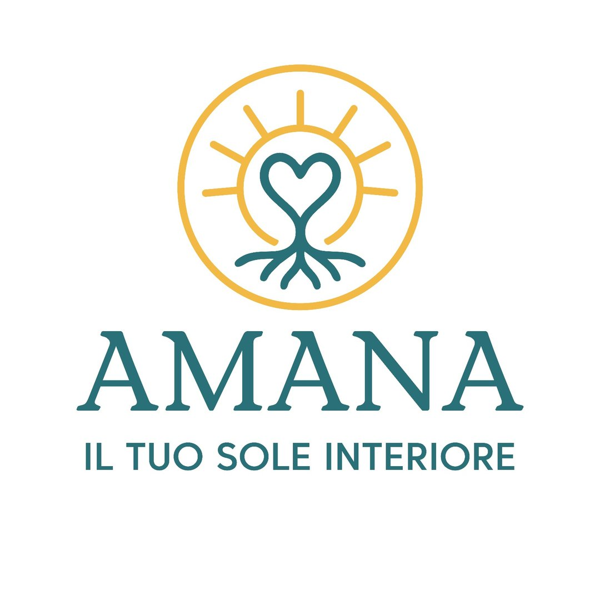
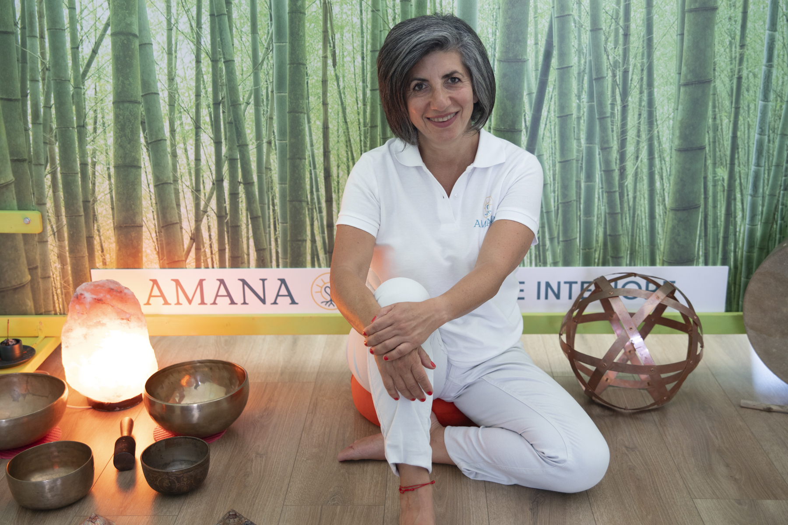

Consenti al tuo corpo di ritrovare la sua quiete
Trattamenti specialistici dedicati al riequilibrio profondo del sistema nervoso guidati dalla cura professionale di Francesca Schiralli.
Un'oasi di benessere strutturata attorno a te
Nel cuore di Casate, lo **Studio Olistico Amana** è un ambiente protetto concepito per aiutarti a disattivare i ritmi frenetici della quotidianità. Attraverso tocchi leggeri e sintonizzazioni energetiche mirate, lavoriamo insieme per rilasciare le memorie di stress accumulate nei tessuti corporei.


I Tre Cardini del Riequilibrio
Ascolto Profondo
Nessun protocollo rigido o standardizzato. Ogni corpo possiede un linguaggio unico che merita attenzione e rispetto dedicato.
Tempo e Decelerazione
Le sessioni in studio sono distanziate per garantire la massima tranquillità, privacy e assenza di fretta o scadenze.
Integrazione Bioenergetica
Uniamo la precisione anatomica del tocco fisico a una profonda consapevolezza dei flussi energetici e quantici dell'organismo.
Il Tuo Percorso In Studio
1. Colloquio Preliminare Informale
Un momento per dialogare e comprendere il tuo stato di benessere generale, i tuoi obiettivi fisici o le tensioni emotive che desideri affrontare.
2. Sessione Olistica Dedicata
L'applicazione del trattamento sul lettino (completamente vestiti, in abiti comodi) alternando tecniche manuali e sintonizzazioni energetiche.
3. Integrazione e Consigli Pratici
Al termine del trattamento analizzeremo insieme le risposte fornite dal corpo, offrendoti piccoli spunti per mantenere la stabilità a casa.
Le parole di chi frequenta lo Studio

Francesca Schiralli
"Il corpo non mente mai. Ascoltare i suoi segnali con gentilezza ed empatia è il primo passo indispensabile verso una guarigione solida e naturale."
Sono Francesca Schiralli, operatrice olistica specializzata nel riequilibrio del sistema nervoso e delle energie sottili. Ho fondato lo studio **Amana** a Casate per dare forma a un luogo in cui le persone potessero reimparare ad ascoltarsi.
Grazie alla mia formazione specialistica, unisco l'approccio strutturale e fluido della terapia Cranio-Sacrale con le più moderne chiavi di lettura dei trattamenti energetici e quantici. Il mio obiettivo è sostenere l'organismo nel rilascio delle tensioni fisiche ed emotive accumulate nel tempo.
I Trattamenti dello Studio
Percorsi manuali ed energetici personalizzati sulle tue specifiche esigenze, praticati con la massima cura e delicatezza.

Trattamento Cranio-Sacrale
Un contatto manuale impercettibile e profondo applicato sulle strutture ossee del cranio e lungo tutta la colonna fino al sacro. Questa tecnica stimola l'armonizzazione del liquido cefalorachidiano, disattivando gli stati di allerta e stress indotti dal sistema nervoso ortosimpatico. Ideale per emicranie, insonnia e tensioni posturali.

Massaggio Energetico
Un trattamento fluido che lavora lungo i meridiani energetici del corpo per ripristinare il corretto scorrimento della linfa vitale e sciogliere le contratture muscolari psicosomatiche. Questa manualità profonda rilassa la muscolatura, elimina la stanchezza cronica e ricarica i centri bioenergetici principali.

Trattamenti Quantici
Lavorando sui campi informazionali che circondano il corpo fisico, i percorsi quantici mirano a riprogrammare le credenze limitanti e i blocchi sottili immagazzinati a livello subconscio. Attraverso frequenze di risonanza armonica, stimolano l'autoguarigione e l'allineamento vibrazionale profondo della persona.

Trattamenti a Distanza
Il benessere olistico non conosce confini fisici. Pensato appositamente per chi non ha la possibilità di muoversi o raggiungere la sede di Casate, questo trattamento permette di ricevere un bilanciamento energetico a distanza, concordando un orario di ascolto e focalizzazione profonda in modalità protetta.
Corsi e Formazione
[Spazio Modello] Di seguito sono riportati i corsi e i laboratori attivi presso lo studio. Potrai modificare e personalizzare questi testi in qualsiasi momento con i tuoi reali eventi futuri.
Introduzione all'Autotrattamento
Un percorso pratico di due giorni per imparare ad ascoltare i messaggi sottili del proprio corpo, localizzare le tensioni e rilasciarle in autonomia attraverso micro-contatti consapevoli.
- Durata: 12 ore totali
- Sede: In presenza a Casate
Percezione delle Energie Sottili
4 incontri settimanali aperti a tutti, dedicati allo studio teorico-pratico del sistema energetico umano, dei meridiani e dei campi aurici per migliorare la vitalità quotidiana.
- Durata: 4 lezioni da 2 ore
- Requisiti: Nessuno
Meditazione e Quiete Dinamica
Sessioni collettive a numero chiuso per sperimentare il vuoto mentale e il rilassamento fasciale profondo indotto, ideali per azzerare lo stress accumulato nel lavoro.
- Orario: Sabato mattina
- Posti: Max 8 partecipanti
Contatti e Appuntamenti
Contatta la proprietaria **Francesca Schiralli** per riservare il tuo appuntamento o richiedere dettagli sui prossimi eventi o corsi in partenza.
Sede di Amana
Via Trieste 11
**Casate (MI)**
Orari di Ricevimento
Lunedì – Venerdì: 09:00 – 19:30
Sabato: 09:00 – 13:00
Si riceve esclusivamente su appuntamento.
Canale Preferenziale Rapido
Invia un messaggio WhatsAppScrivi una Mail
Dove si trova il centro
Studio Amana, Via Trieste 11, Casate (MI)